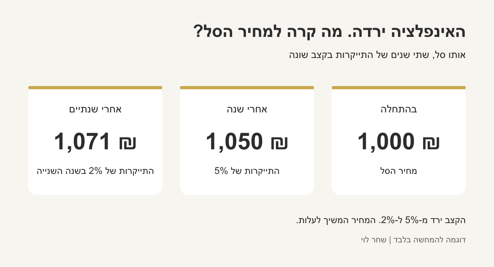
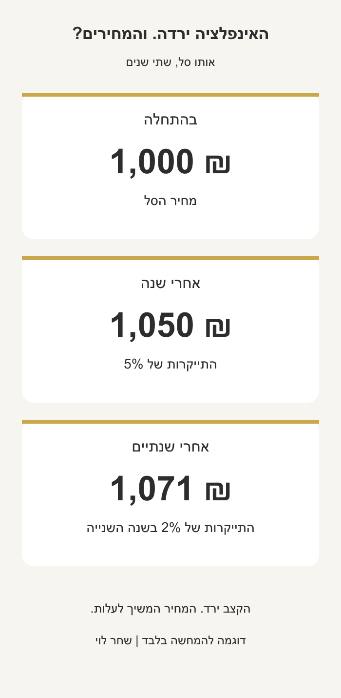
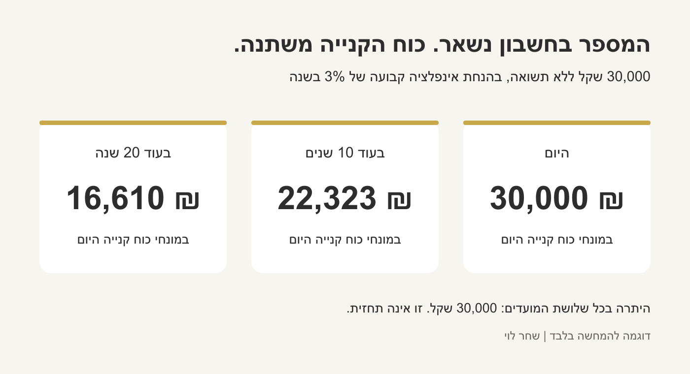
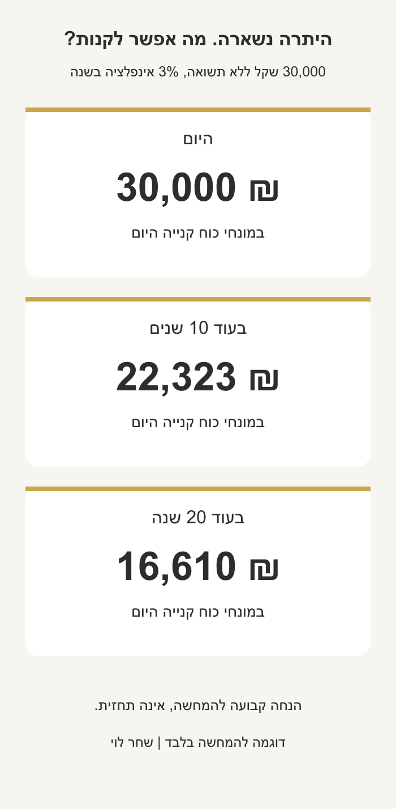

בקצרה
מדד המחירים לצרכן מודד איך משתנה המחיר של סל מוצרים ושירותים. גם כשהאינפלציה יורדת, המחירים יכולים להמשיך לעלות. למשקיעים לטווח ארוך חשוב להבין מה קורה לכוח הקנייה ולהתאים את הכסף למטרות שלו.
יש לך 30,000 שקל בחשבון. לא נגעת בהם שנה, והמספר נשאר בדיוק אותו דבר.
אז למה יכול להיות שבסוף השנה הכסף הזה קונה לך פחות?
פה נכנסים מדד המחירים לצרכן ואינפלציה. שני מושגים שנשמעים כמו משהו של כלכלנים, אבל בפועל קשורים לקניות בסופר, לשכר הדירה ולכסף שאנחנו חוסכים לעתיד.
מה זה בכלל מדד המחירים לצרכן?
תחשוב על סל קניות גדול. לא רק לחם וחלב, אלא גם שכר דירה, תחבורה, בגדים, בריאות ובילויים.
הלשכה המרכזית לסטטיסטיקה בודקת איך המחירים של המוצרים והשירותים בסל הזה משתנים לאורך הזמן. לכל תחום יש משקל לפי החלק שלו בהוצאות משקי הבית.
המדד מודד בכמה השתנה המחיר של הסל כולו. למשל, עלייה של 2% במדד אומרת שהסל התייקר ב-2% לעומת התקופה שאליה משווים. זה לא אומר שכל מוצר בסל התייקר ב-2% - חלק מהמחירים עלו, אחרים ירדו וחלק נשארו כמו שהיו. ההגדרה של הלמ״ס.
וזה גם מסביר למה לפעמים אתה קורא שהמדד עלה קצת, אבל מרגיש שההוצאות שלך קפצו הרבה יותר. אם אתה מוציא חלק גדול מההכנסה על שכירות או רכב, אתה לא בהכרח חווה את אותה התייקרות כמו מי שגר אצל ההורים ונוסע בתחבורה ציבורית. המדד הוא ממוצע. התקציב שלך אישי.
ואיך זה קשור לאינפלציה?
אינפלציה היא עלייה כללית במחירים לאורך זמן. השינוי במדד המחירים לצרכן הוא הדרך המרכזית שבה מודדים אותה בישראל. כשהמחירים עולים, כל שקל קונה פחות.
כשאומרים שהמדד עלה בחודש מסוים, משווים אותו לחודש הקודם. כשמדברים על האינפלציה ב-12 החודשים האחרונים, משווים לאותו חודש שנה קודם. אלה שתי תקופות שונות, ולכן חודש אחד של ירידה לא בהכרח אומר שהמחירים נמוכים יותר מאשר לפני שנה.
ויש עוד בלבול ששווה לעצור עליו: ירידה באינפלציה לא בהכרח אומרת ירידה במחירים.
נניח שסל מסוים עלה 1,000 שקל. בשנה הראשונה הוא התייקר ב-5%, והגיע ל-1,050 שקל. בשנה שאחריה האינפלציה ירדה ל-2%, והסל הגיע ל-1,071 שקל.
האינפלציה ירדה, אבל הסל עדיין התייקר. פשוט בקצב איטי יותר. אלה מספרים לדוגמה בלבד.


אז איפה אנחנו מרגישים את זה?
קודם כל בהוצאות. אם המחירים עולים וההכנסה שלך נשארת אותו דבר, נשאר פחות כסף לחסוך, להשקיע או לטוס איתו.
אבל זה מגיע גם לריבית. ריבית גבוהה יותר יכולה לצמצם ביקושים ולעזור להאט את עליית המחירים. בדרך היא יכולה לייקר אשראי ולהגדיל את התמריץ לחסוך. לכן נתוני אינפלציה חשובים לבנק ישראל כשהוא מחליט על הריבית. ההחלטה נשענת על תמונה רחבה, ולא משתנה אוטומטית אחרי כל מדד.
ומה זה אומר עלינו כמשקיעים לטווח ארוך?
מבחינתי, השאלה החשובה היא מה הכסף שלנו יוכל לאפשר לנו בעתיד.
אפשר לראות את המספר בחשבון גדל, ועדיין לגלות שכוח הקנייה כמעט לא השתפר. בגלל זה כדאי להכיר את ההבדל בין תשואה נומינלית לתשואה ריאלית.
התשואה הנומינלית היא השינוי במספר שאנחנו רואים על המסך.
נומינלי מגיע מהמילה הלטינית nomen, שפירושה שם. לי זה עוזר לזכור: זה המספר שאני רואה מול העיניים. אם כתוב שההשקעה שלי עלתה ב-8% השנה, זו התשואה הנומינלית שלי, במטבע שבו היא מוצגת.
לעומת זאת, התשואה הריאלית בודקת מה קרה לכוח הקנייה אחרי שמביאים בחשבון את האינפלציה.
או במילים פשוטות: ריאלי - אמיתי. כמה יותר אני יכול לקנות עם הכסף שלי, בלי לחיות עכשיו בגן עדן.
ואם ההשקעה מוצגת בדולרים אבל אנחנו מודדים את הכסף בשקלים, צריך להביא בחשבון גם את השינוי בשער הדולר מול השקל. זה חלק מחישוב התשואה בשקלים. אחר כך מתאימים לאינפלציה בישראל כדי להבין מה קרה לכוח הקנייה שלנו כאן.
נניח שהיו לך 10,000 שקל, וההשקעה עלתה ב-8% בשנה, במונחים שקליים. עכשיו יש לך 10,800 שקל.
אם באותה שנה המחירים עלו ב-3%, התשואה הריאלית שלך היא בערך 4.85%, לפני מס ועלויות. אפשר לחשוב על 8% פחות 3% כקירוב מהיר, אבל זה לא החישוב המדויק.
אתה תראה באפליקציה 10,800 שקל, אבל כוח הקנייה שלהם יהיה שווה לכ-10,485 שקל במחירים של תחילת השנה. זו דוגמה להמחשה, לא תשואה צפויה.
ולמה זה כל כך משמעותי כשיש לנו עוד הרבה שנים קדימה?
כי גם התייקרות קטנה מצטברת.
ניקח את אותם 30,000 שקל מההתחלה. נניח שהם לא צוברים שום תשואה, והמחירים עולים ב-3% בכל שנה.
אחרי 10 שנים, כוח הקנייה שלהם יהיה כמו כ-22,323 שקל היום. אחרי 20 שנה, כמו כ-16,610 שקל היום.
בחשבון עדיין כתוב 30,000. אבל האפשרויות שהסכום הזה נותן לך הצטמצמו.


זו המחשה בהנחה קבועה, לא תחזית לאינפלציה ולא נתון היסטורי. לא צריך להיכנס לחישוב כדי להבין את הרעיון: גם כמה אחוזים בשנה מצטברים לשינוי גדול לאורך זמן.
כן שווה להכיר את כלל ה-72. זה קיצור דרך שנותן הערכה: מחלקים 72 בשיעור האינפלציה השנתי, ומקבלים בערך תוך כמה שנים המחירים יוכפלו וכוח הקנייה של כסף שלא צובר תשואה ייחתך בחצי.
למשל, 72 חלקי 3 הם 24.
אז בהנחה שהאינפלציה תישאר 3% בכל שנה, בעוד כ-24 שנים כוח הקנייה של הכסף הזה יהיה בערך חצי. זה כלל אצבע, לא חישוב מדויק ולא הבטחה שהאינפלציה תישאר ככה.
אז צריך להעביר את כל הכסף להשקעות?
כאן כדאי לעשות סדר במטרה של כל סכום.
לכסף להוצאות הקרובות ולכרית ביטחון יש תפקיד: להיות זמין כשצריך אותו. גם לחיסכון יש סיכון של שחיקה כשהתשואה שלו לא מדביקה את האינפלציה. הכנתי על זה גם מדריך נפרד על קרן כספית וכסף נזיל.
כסף שמיועד לעוד הרבה שנים מאפשר לשקול השקעות עם יותר תנודתיות, בהתאם למטרה וליכולת להתמודד עם ירידות. פיזור בין השקעות עוזר לצמצם סיכון, אבל לא מבטל אותו. גם מניות ותיק מפוזר יכולים לרדת, ואין הבטחה שינצחו את האינפלציה בכל תקופה.
ומה עושים כשמתפרסם המדד הבא?
אפשר לקרוא, להבין ולהמשיך ביום שלך.
בתור משקיעים לטווח ארוך, נתון חודשי הוא הזדמנות לבדוק שהתוכנית עדיין מתאימה למטרות שלנו. בפני עצמו הוא לא מספק תוכנית השקעה, ובטח לא תשובה אישית לשאלה מה לקנות או למכור.
אם ההוצאות הקבועות עלו, יכול להיות שצריך לעדכן את התקציב או את סכום החיסכון. אם השתנה המועד שבו נצטרך את הכסף, יש סיבה לבדוק גם את רמת הסיכון. אלה שינויים אמיתיים בחיים שלנו שאפשר לבנות סביבם החלטה.
מה שחשוב לי שתיקח מהכתבה הזאת הוא שהמטרה של הכסף היא לאפשר לנו לחיות. לטוס, לבחור איפה לעבוד, לבנות משפחה או פשוט להרגיש שיש לנו מרווח נשימה.
מדד המחירים לצרכן מזכיר לנו שגם כשאנחנו לא נוגעים בכסף, מה שאפשר לעשות איתו ממשיך להשתנות.
הכתבה נועדה למידע כללי ואינה ייעוץ השקעות אישי. הדוגמאות להמחשה בלבד.
מקורות והרחבה
- הלמ״ס - הגדרת מדד המחירים לצרכן, עמ׳ 20 בחוברת.
- בנק ישראל - מילון מונחים: אינפלציה ומדד המחירים לצרכן.
- בנק ישראל - אינפלציה וריבית.
- BLS - ממוצע המדד והחוויה האישית.
- BLS - שינוי חודשי ושינוי שנתי במדד.
- Investor.gov - תשואה ריאלית.
- Investor.gov - השקעות בינלאומיות וסיכון מטבע.
- Investor.gov - טווח השקעה, פיזור וסיכון.
- DISB - כלל 72 ואינפלציה, עמ׳ 2 במדריך.